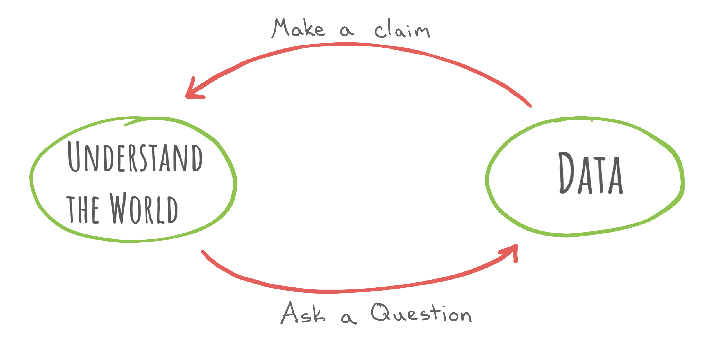
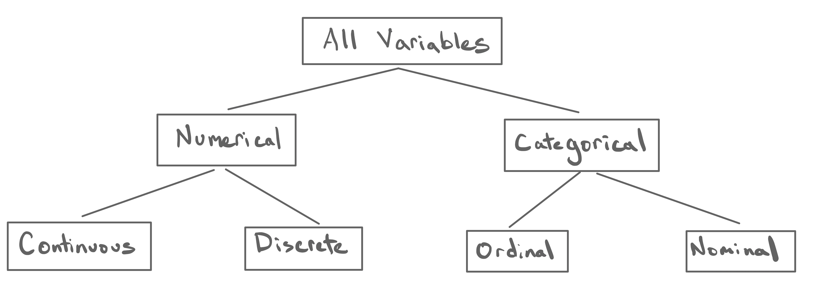
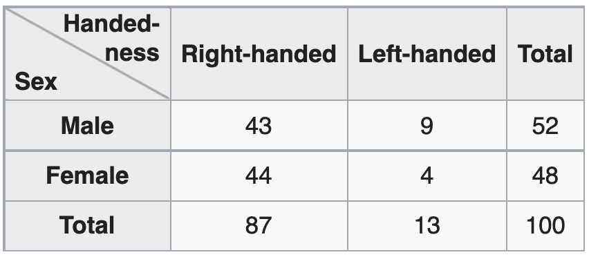

| bill_length_mm | bill_depth_mm | species |
|---|---|---|
| 43.5 | 18.1 | Chinstrap |
| 48.1 | 15.1 | Gentoo |
| 49.0 | 19.5 | Chinstrap |
| 45.4 | 18.7 | Chinstrap |
| 34.6 | 21.1 | Adelie |
| 49.8 | 17.3 | Chinstrap |
| 40.9 | 18.9 | Adelie |
| 45.3 | 13.7 | Gentoo |
The Taxonomy of Data
Types of variables and the data frame
In the beginning was data, and from that data was built an understanding of the world.
…or…
In the beginning was understanding, and from that understanding sprung questions that sought to be answered with data.
So, which is it?
This is a philosophical question and it is up for debate. What is clearer is that in the process of engaging in data science, you will inevitably find yourself at one of these beginnings, puzzling over how to make your way to the other one.

The defining element of data science is the centrality of data as the means of advancing our understanding of the world. The word “data” is used in many different ways, so let’s write down a definition to get everyone on the same page.
- Data
- An item of (chiefly numerical) information, especially one obtained by scientific work, a number of which are typically collected together for reference, analysis, or calculation. From Latin datum: that which is given. Facts.
This broad definition permits a staggering diversity in the forms that data can take. When you conducted a chemistry experiment in high school and recorded your measurements in a table in a lab notebook, that was data. When you registered for this class and your name showed on CalCentral, that was data. When the James Webb Space Telescope took a photo of the distant reaches of our solar system, recording levels of light pixel-by-pixel, that was data.
Such diversity in data is more precisely described as diversity in the types of variables that are being measured in a data set.
- Variable
- A characteristic of an object or observational unit that can be measured and recorded.
In your chemistry notebook you may have recorded the temperature and pressure of a unit of gas, two variables that are of scientific interest. In the CalCentral data set, name is the variable that was recorded (on you!) but you can imagine other variables that the registrars office might have recorded: your year at Cal, your major, etc. Each of these are called variables because the value that is measured generally varies as you move from one object to the next. While your value of the name variable might be Penelope, if we record the same variable on another student we’ll likely come up with different value.
A Taxonomy of Data
While the range of variables that we can conceive of is innumerable, there are recurring patterns in those variables that allow us to group them into persistent types that have shared properties. Such a practice of classification results in a taxonomy, which has been applied most notably in evolutionary biology to classify all forms of life.
Within the realm of data, an analogous taxonomy has emerged.

Types of Variables
The principle quality of a variable is whether it is numerical or categorical.
- Numerical Variable
- A variable that take numbers as values and where the magnitude of the number has a quantitative meaning.
- Categorical Variable
- A variable that take categories as values. Each unique category is called a level.
When most people think “data” they tend to think about numerical variables (like the temperature and pressure recorded in your lab notebook) but categorical variables (like the name recorded on CalCentral) are very common.
All numerical variables can be classified as either continuous or discrete.
- Continuous Numerical Variable
- A numerical variable that takes values on an interval of the real number line.
- Discrete Numerical Variable
- A numerical variable that takes values that have jumps between them.
A good example of a continuous numerical variable is temperature. If we are measuring outside air temperature on Earth in Fahrenheit, it is possible that we would record values anywhere from around -125 degrees F and +135 degrees F. While we might end up rounding our measurement to the nearest integer degree, we can imagine that the phenomenon of temperature itself varies smoothly and continuously across this range.
A good example of a discrete numerical variable is household size. When the US Census goes door-to-door every year collecting data on every household, they record the number of people living in that household. A household can have 1 person, or 2 people, or 3 people, or 4 people, and so on, but it cannot have 2.83944 people. This makes it discrete.
What unites both types of numerical variables is that the magnitude of the numbers have meaning and you can perform mathematical operations on them and the result also has meaning. It is possible and meaningful to talk about the average air temperature across three locations. It is also possible and meaningful to talk about the sum total number of people across ten households.
The ability to perform mathematical operations drops away when we move to ordinal variables. All categorical variables can be classified as either ordinal or nominal.
- Ordinal Categorical Variable
- A categorical variable with levels that have a natural ordering.
- Nominal Categorical Variable
- A categorical variable with levels with no ordering.
You have likely come across ordinal categorical variables if you have taken an opinion survey. Consider the question:“Do you strongly agree, agree, feel neutral about, disagree, or strongly disagree with the following statement: Dogs are better than cats?” When you record answers to this question, you’re recording measurements on a categorical variable that takes values “strongly agree”, “agree”, “neutral”, “disagree”, “strongly disagree”. Those are the levels of the categorical variable and they have a natural ordering: “strongly agree” is closer to “agree” than it is to “strongly disagree”.
You can contrast this with a nominal categorical variable. Consider a second question that asks (as the registrar does): “What is your name?” There are many more possible levels in this case - “Penelope”, “David”, “Shobhana”, etc. - but those levels have no natural ordering. In fact this is very appropriate example of a nominal variable because the word itself derives from the Latin nomen, or “name”.
Let’s take a look at a real data set to see if we can identify the variables and their types.
Example: Palmer Penguins
Dr. Kristen Gorman is a fisheries and wildlife ecologist at the University of Alaska, Fairbanks whose work brought her to Palmer Station, a scientific research station run by the National Science Foundation in Antarctica. At Palmer Station, she took part in a long-term study to build an understanding of the breeding ecology and population structure of penguins.

In order to build her understanding of this community of penguins, she and fellow scientists spent time in the field recording measurements on a range of variables that capture important physical characteristics.

Two of the variables that were recorded were bill length and bill depth1. Each of these capture a dimension of the bill of a penguin recorded in millimeters These are identifiable as continuous numerical variables. They’re numerical because the values have quantitative meaning and they’re continuous because bill sizes don’t come in fixed, standard increments. They vary continuously.
Another variable that was recorded was the species of the penguin, either “Adelie”, “Gentoo”, or “Chinstrap”. Because these values are categories, this is a categorical variable. More specifically, it’s a nominal categorical because there is no obvious natural ordering between these three species.

These are just three of many variables that recorded in the penguins data set and published along their scientific findings in the paper, Ecological sexual dimorphism and environmental variability within a community of Antarctic penguins (genus Pygoscelis)2. We will return throughout this course to this data set and this study. It is a prime example of how careful data collection and careful scientific reasoning can expand our understanding of a corner of our world about which we know very little.
Why Types Matter
The Taxonomy of Data is a useful tool of statistics and data science because it helps guide the manner in which data is recorded, visualized, and analyzed. Many confusing plots have been made by not thinking carefully about whether a categorical variable is ordinal or not or by mistaking a continuous numerical variable for a categorical variable. You will get plenty of practice using this taxonomy to guide your data visualization in the next unit.
Like many tools built by scientists, though, this taxonomy isn’t perfect. There are many variables that don’t quite seem to fit into the taxonomy or that you can argue should fit into multiple types. That’s usually a sign that something interesting is afoot and is all the more reason to think carefully about the nature of the variables and the values it might take before diving into your analysis.
A Structure for Data: The Data Frame
When we seek to grow our understanding of a phenomenon, sometimes we select a single variable that we go out and collect data on. More often, we’re dealing with more complex phenomenon that are characterized by a few, or a few dozen, or hundreds (or even millions!) of variables. CalCentral has far more than just your name on file. To capture all of the complexity of class registration at Cal, it is necessary to record dozens of variables.
To keep all of this data organized, we need a structure. While there are several different ways to structure a given data set, the format that has become most central to data science is the data frame.
- Data Frame
- An array that associates the observations (downs the rows) with the variables measured on each observation (across the columns). Each cell stores a value observed for a variable on an observation.
While this definition might seem opaque, you are already familiar with a data frame. You are you just more accustomed to seeing it laid out this like this:
You might be accustomed to calling this a “spreadsheet” or a “table”, but the organizational norm of putting the variables down the columns and the observations across the rows make this a more specific structure.
One of the first questions that you should address when you first come across a data frame is to determine what the unit of observation is.
- Unit of Observation
- The class of object on which the variables are observed.
In the case of data frame above, the unit of observation is a single penguin near Palmer Station. The first row captures the measurements on the first penguin, the second row captures the measurements of the second penguin, and so on. If I log into CalCentral to see the data frame that records information on the students enrolled in this class, the unit of observation is a single student enrolled in this class.
Not a Data Frame
Before you leave thinking that “data frame” = “spreadsheet”, consider this data set3:

For it to be a data frame, we would have to read across the columns and see the names of the variables. You can imagine recording whether or not someone is right-handed or left-handed, but those variables would take the values “yes” and “no”, not the counts that we see here. Furthermore, total is not a variable that we’ve recorded a single unit; this column captures aggregate properties of the whole data set.
While this structure might well be called a “table” or possibly a “spreadsheet”, it doesn’t meet our definition for a data frame.
The Ideas in Code
The concepts of a variable, its type, and the structure of a data frame are useful because they help guide our thinking about the nature of a data. But we need more than definitions. If our goal is to construct a claim with data, we need a tool to aid in the construction. Our tool must be able to do two things: it must be able to store the data and it must be able to perform computations on the data. This is where R comes in!
First, we will discuss how R can store and perform computations on data. Then, we will relate these basics to the Taxonomy of Data we have just discussed.
Saving Objects
Whenever you want to save the output of an R command, add an assignment arrow <- (less than, minus) as well as a name, such as “answer” to the left of the command.
answer <- 2 ^ (3 + 1)When you run this command, there are two things to notice.
- The word
answerappears in the upper right hand corner of RStudio, in the “Environment” tab. - No output is returned at the console.
Every time you run a command, you can ask yourself: do I want to just see the output at the console or do I want to save it for later? If the latter, you can always see the contents of what you saved by just typing its name at the console and pressing Enter.
answer[1] 16There are a few rules around the names that R will allow for the objects that you’re saving. First, while all letters are fair game, special characters like +, -, /, !, $, are off-limits. Second, names can contain numbers, but not as the first character. That means names like answer, a, a12, my_pony, and FOO will all work. 12a and my_pony! will not.
But just because I’ve told you that those names won’t work doesn’t mean you shouldn’t give it a try…
my_pony! <- 2 ^ (3 + 1)Error: <text>:1:8: unexpected '!'
1: my_pony!
^This is an example of an error message and, though they can be alarming, they’re also helpful in coaching you how to correct your code. Here, it’s telling you that you had an “unexpected !” and then it points out where in your code that character popped up.
Creating Vectors
While it is helpful to be able to store a single number as an R object, to store data sets we’ll need to store a series of numbers. You can combine multiple values by putting them inside c() separated by commas.
my_fav_numbers <- c(9, 11, 19, 28)
my_fav_numbers[1] 9 11 19 28This is object is called a vector.
- Vector (in R)
-
A set of contiguous data values that are of the same type.
As the definition suggests, you can create vectors out of many different types of data. To store words as data, use the following:
my_fav_colors <- c("green", "orange", "purple")
my_fav_colors[1] "green" "orange" "purple"As this example shows, R can store more than just numbers as data. "green", "orange“, and "purple" are each called character strings and when combined together with c() they form a character vector. You can identify a string because it is wrapped in quotation marks and gets highlighted a different color in RStudio.
Vectors are often called atomic vectors because, like atoms, they are the simplest building blocks in the R language. Most of the objects in R are, at the end of the day, constructed from a series of vectors.
Functions
While the vector will serve as our atomic method of storing data in R, how do we perform computations on it? That is the role of functions.
Let’s use a function to find the arithmetic mean of the vector my_fav_numbers.
mean(my_fav_numbers)[1] 16.75A function in R operates in a very similar manner to functions that you’re familiar with from mathematics.

In math, you can think of a function, \(f()\) as a black box that takes the input, \(x\), and transforms it to the output, \(y\). You can think of R functions in a very similar way. For our example above, we have:
-
Input: the vector of four numbers that serves as the input to the function,
my_fav_numbers. -
Function: the function name,
mean, followed by parentheses. - Output: the number 16.75.
Functions on Vectors
mean() is just one of thousands of different functions that are available in R. Most of them are sensibly named, like the following, which compute square roots and natural logarithms.
sqrt(my_fav_numbers)[1] 3.000000 3.316625 4.358899 5.291503log(my_fav_numbers)[1] 2.197225 2.397895 2.944439 3.332205Note that with these two functions, the input was a vector of length four and the output is a vector of length four. This is a distinctive aspect of the R language and it is helpful because it allows you to perform many separate operations (taking the square root of four numbers, one by one) with just a single command.
The Taxonomy of Data in R
In the last lecture notes, we introduced the Taxonomy of Data as a broad system to classify the different types of variables on which we can collect data. If you recall, a variable is a characteristic of an object that you can measure and record. When Dr. Gorman walked up to her first penguin (the unit of observation) and measured its bill length, she collected a single observation of the variable bill_length_mm. You could record that in R using,
bill_length_mm <- 50.7She continued on to measure the next penguin, then the next, then the next… Instead of recording these as separate objects, it is more efficient to store them as a vector.
bill_length_mm <- c(50.7, 48.5, 52.8, 44.5, 42.0, 46.9, 50.2, 37.9)This example shows that
A vector in R is a natural way to store observations on a variable.
so in the same way that we have asked, “what is the type of that variable?” we can now ask “what is the class of that variable in R?”.
- Class (R)
-
A collection of objects, often vectors, that share similar attributes and behaviors.
While there are many classes in R, you can get a long way only knowing three. The first is represented by our vector my_fav_numbers. Let’s check it’s class using the class() function.
class(my_fav_numbers)[1] "numeric"Here we learn that my_fav_numbers is a numeric vector. Numeric vectors, as the name suggests, are composed only of numbers and can include measurements from both discrete and continuous numerical variables.
What about my_fav_colors?
class(my_fav_colors)[1] "character"R stores that as a character vector. This is a very flexible class that can be used to store text as data. But what if there are only a few fixed values that a variable can take? In that case, you can do better than a character vector by usinggit a factor. Factor is a very useful class in R because it encodes the notion of levels discussed in the last notes.
To illustrate the difference, let’s make a character vector but then enrich it by turning it into a factor using factor().
[1] "cat" "cat" "dog"fac[1] cat cat dog
Levels: cat dogThe original character vector stores the same three strings that we used as input. The factor adds some additional information: the possible values that this vector can take.
This is particularly useful when you want to let R know that these levels have a natural ordering. If you have strong opinions about the relative merit of dogs over cats, you could specify that using:
[1] cat cat dog
Levels: dog catThis example also demonstrates that you can create a (character) vector inside a function.
While this doesn’t change the way the levels are ordered in the vector itself, it will effect the way they behave when we use them to create plots, as we’ll do in the next set of notes.
These three vector classes do a good job of putting into flesh and bone (or at least silicon) the abstract types captured in the Taxonomy of Data.

Data Frames in R
While vectors in R do a great job of capturing the notion of a variable, we will need more than that if we’re going to represent something like a data frame. Conveniently enough, R has a structure well-suited to this task called…(drumroll…)
- Dataframe (R)
- A two dimensional data structure used to store vectors of the same length. A direct analog of the data frame defined previously4.
Let’s use R to recreate the penguins data frame collected by Dr. Gorman.
| bill_length_mm | bill_depth_mm | species |
|---|---|---|
| 43.5 | 18.1 | Chinstrap |
| 48.1 | 15.1 | Gentoo |
| 49.0 | 19.5 | Chinstrap |
| 45.4 | 18.7 | Chinstrap |
| 34.6 | 21.1 | Adelie |
| 49.8 | 17.3 | Chinstrap |
| 40.9 | 18.9 | Adelie |
| 45.3 | 13.7 | Gentoo |
Creating a data frame
In the data frame above, there are three variables; the first two numeric continuous, the last one categorical nominal. Since R stores variables as vectors, we’ll need to create three vectors.
Check the class of these vectors by using the as input to class().
While bill_length_mm and bill_depth_mm are both being stored as numeric vectors, species was first collected into a character vector, then passed directly to the factor() function. This is an example of nesting one function inside of another and it combined two lines of code into one.
With the three vectors stored in the Environment, all you need to do is staple them together with data.frame().
penguins_df <- data.frame(bill_length_mm, bill_depth_mm, species)
penguins_df bill_length_mm bill_depth_mm species
1 50.7 19.7 Chinstrap
2 48.5 15.0 Gentoo
3 52.8 20.0 Chinstrap
4 44.5 15.7 Gentoo
5 42.0 20.2 Adelie
6 46.9 16.6 Chinstrap
7 50.2 18.7 Chinstrap
8 37.9 18.6 AdelieSummary
In this lecture note we have focused on the nature of the data that will serve as the currency from which we’ll construct an improved understanding of the world. A first step is to identify the characteristics of the variables that are being measured and determine their type within the Taxonomy of Data. A second step is to organize them into a data frame to clearly associate the value that is measured for a variable with a particular observational unit.
With these ideas in hand, we learned how to bring data onto our computer, so that in our next class, we can begin the process of identifying its structure and communicating that structure numerically and visually.
Footnotes
Penguin artwork by @allison_horst.↩︎
Gorman KB, Williams TD, Fraser WR (2014). Ecological sexual dimorphism and environmental variability within a community of Antarctic penguins (genus Pygoscelis). PLoS ONE 9(3):e90081. https://doi.org/10.1371/journal.pone.0090081↩︎
An image from the Wikipedia article on contingency tables, https://en.wikipedia.org/wiki/Contingency_table.↩︎
R is an unusual language in that the data frame has been for decades a core structure of the language. The analogous structure in Python is the data frame found in the Pandas library.↩︎